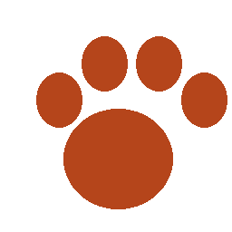

Nossa história
A Patas do Bem nasceu em 2019, quando um grupo de voluntários começou a resgatar animais abandonados nas ruas. Hoje mantemos um abrigo com capacidade para 60 animais e já encaminhamos mais de 800 cães e gatos para novos lares.

A Patas do Bem nasceu em 2019, quando um grupo de voluntários começou a resgatar animais abandonados nas ruas. Hoje mantemos um abrigo com capacidade para 60 animais e já encaminhamos mais de 800 cães e gatos para novos lares.
| Atividade | Quantidade |
|---|---|
| Animais resgatados | 214 |
| Adoções realizadas | 187 |
| Castrações | 302 |